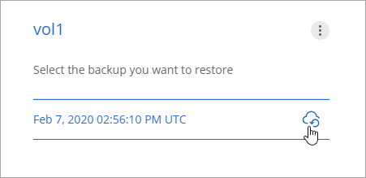
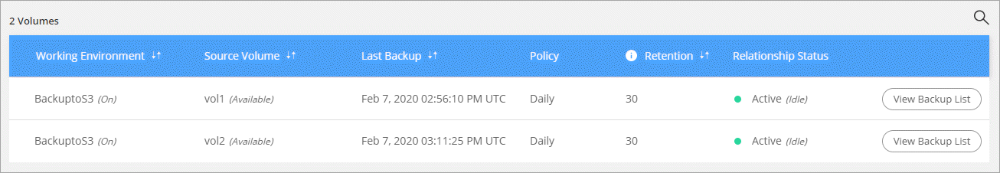
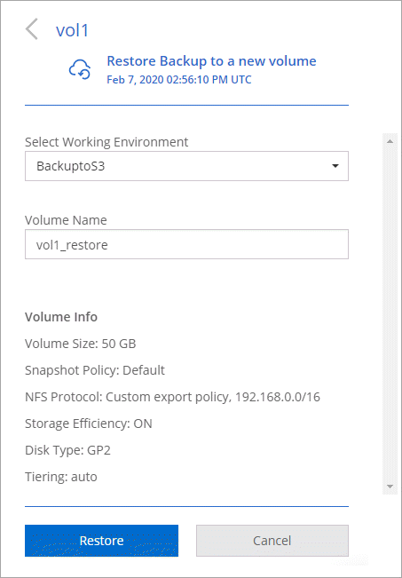
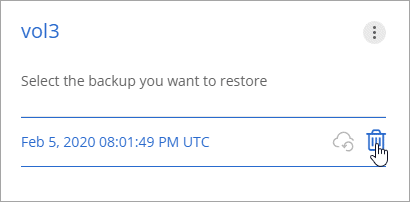

Backing up data to Amazon S3 Edit on GitHub Request doc changes
Contributors
Backup to S3 is an add-on feature for Cloud Volumes ONTAP that delivers fully-managed backup and restore capabilities for protection, and long-term archive of your cloud data. Backups are stored in S3 object storage, independent of volume Snapshot copies used for near-term recovery or cloning.
When you enable Backup to S3, the service performs a full backup of your data. All additional backups are incremental, which means that only changed blocks and new blocks are backed up.
Note that you must use Cloud Manager for all backup and restore operations. Any actions taken directly from ONTAP or from Amazon S3 results in an unsupported configuration.
Quick start
Get started quickly by following these steps or scroll down to the remaining sections for full details.
 Verify support for your configuration
Verify support for your configuration
Verify the following:
-
Cloud Volumes ONTAP 9.4 or later is running in a supported AWS region: N. Virginia, Oregon, Ireland, Frankfurt, or Sydney
-
You have subscribed to the new Cloud Manager Marketplace offering
-
TCP port 5010 is open for outbound traffic on the security group for Cloud Volumes ONTAP (it’s open by default)
-
TCP port 8088 is open for outbound traffic on the security group for Cloud Manager (it’s open by default)
-
The following endpoint is accessible from Cloud Manager:
https://w86yt021u5.execute-api.us-east-1.amazonaws.com/production/whitelist
-
There’s room for Cloud Manager to allocate up to two interface VPC endpoints in the VPC (the AWS limit per VPC is 20)
-
Cloud Manager has permission to use the VPC endpoint permissions listed in the latest Cloud Manager policy:
"ec2:DescribeVpcEndpoints", "ec2:CreateVpcEndpoint", "ec2:ModifyVpcEndpoint", "ec2:DeleteVpcEndpoints"
 Enable Backup to S3 on your new or existing system
Enable Backup to S3 on your new or existing system
-
New systems: The Backup to S3 feature is enabled by default in the working environment wizard. Be sure to keep the option enabled.
-
Existing systems: Open the working environment, click the backup settings icon and enable backups.

 If needed, modify the backup policy
If needed, modify the backup policy
The default policy backs up volumes every day and retains 30 backup copies of each volume. If needed, you can change the number of backup copies to retain.

 Restore your data, as needed
Restore your data, as needed
At the top of Cloud Manager, click Backup & Restore, select a volume, select a backup, and then restore data from the backup to a new volume.

Requirements
Read the following requirements to make sure that you have a supported configuration before you start backing up volumes to S3.
- Supported ONTAP versions
-
Backup to S3 is supported with Cloud Volume ONTAP 9.4 and later.
- Supported AWS regions
-
Backup to S3 is supported with Cloud Volumes ONTAP in the following AWS regions:
-
US East (N. Virginia)
-
US West (Oregon)
-
EU (Ireland)
-
EU (Frankfurt)
-
Asia Pacific (Sydney)
-
- AWS permissions required
-
The IAM role that provides Cloud Manager with permissions must include the following:
"ec2:DescribeVpcEndpoints", "ec2:CreateVpcEndpoint", "ec2:ModifyVpcEndpoint", "ec2:DeleteVpcEndpoints" - AWS subscription requirement
-
Starting with the 3.7.3 release, a new Cloud Manager subscription is available in the AWS Marketplace. This subscription enables deployments of Cloud Volumes ONTAP 9.6 and later PAYGO systems and the Backup to S3 feature. You need to subscribe to this new Cloud Manager subscription before you enable Backup to S3. Billing for the Backup to S3 feature is done through this subscription.
- Port requirements
-
-
TCP port 5010 must be open for outbound traffic from Cloud Volumes ONTAP to the backup service.
-
TCP port 8088 must be open for outbound traffic on the security group for Cloud Manager.
These ports are already open if you used the predefined security groups. But if you used your own, then you’ll need to open these ports.
-
- Outbound internet access
-
Ensure that the following endpoint is accessible from Cloud Manager:
https://w86yt021u5.execute-api.us-east-1.amazonaws.com/production/whitelistCloud Manager contacts this endpoint to add your AWS account ID to the list of allowed users for Backup to S3.
- Interface VPC endpoints
-
When you enable the Backup to S3 feature, Cloud Manager creates an interface VPC endpoint in the VPC where Cloud Volumes ONTAP is running. This backup endpoint connects to the NetApp VPC where Backup to S3 is running. If you restore a volume, Cloud Manager creates an additional interface VPC endpoint—the restore endpoint.
Any additional Cloud Volumes ONTAP systems in the VPC use these two VPC endpoints.
The default limit for interface VPC endpoints is 20 per VPC. Make sure that your VPC hasn’t reached the limit before you enable the feature.
Enabling backups to S3 on a new system
The Backup to S3 feature is enabled by default in the working environment wizard. Be sure to keep the option enabled.
-
Click Create Cloud Volumes ONTAP.
-
Select Amazon Web Services as the cloud provider and then choose a single node or HA system.
-
Fill out the Details & Credentials page.
-
On the Backup to S3 page, leave the feature enabled and click Continue.

-
Complete the pages in the wizard to deploy the system.
The Backup to S3 feature is enabled on the system and backs up volumes every day and retains 30 backup copies. Learn how to modify backup retention.
Enabling backups to S3 on an existing system
You can enable backups to S3 on an existing Cloud Volumes ONTAP system, as long as you are running a supported configuration. For details, see Requirements.
-
Open the working environment.
-
Click the backup settings icon.
-
Select Automatically back up all volumes.
-
Choose your backup retention and then click Save.
The Backup to S3 feature starts taking the initial backups of each volume.
Changing the backup retention
The default policy backs up volumes every day and retains 30 backup copies of each volume. You can change the number of backup copies to retain.
-
Open the working environment.
-
Click the backup settings icon.
-
Change the backup retention and then click Save.
Restoring a volume
When you restore data from a backup, Cloud Manager performs a full volume restore to a new volume. You can restore the data to the same working environment or to a different working environment.
-
At the top of Cloud Manager, click Backup & Restore.
-
Select the volume that you want to restore.

-
Find the backup that you want to restore from and click the restore icon.
-
Select the working environment to which you want to restore the volume.
-
Enter a name for the volume.
-
Click Restore.

Deleting backups
All backups are retained in S3 until you delete them from Cloud Manager. Backups are not deleted when you delete a volume or when you delete the Cloud Volumes ONTAP system.
-
At the top of Cloud Manager, click Backup & Restore.
-
Select a volume.
-
Find the backup that you want to delete and click the delete icon.

-
Confirm that you want to delete the backup.
Disabling backups to S3
Disabling backups to S3 disables backups of each volume on the system. Any existing backups will not be deleted.
-
Open the working environment.
-
Click the backup settings icon.
-
Disable Automatically back up all volumes and then click Save.
How Backup to S3 works
The following sections provide more information about the Backup to S3 feature.
Where backups reside
Backup copies are stored in a NetApp-owned S3 bucket, in the same region where the Cloud Volumes ONTAP system is located.
Backups are incremental
After the initial full backup of your data, all additional backups are incremental, which means that only changed blocks and new blocks are backed up.
Backups are taken at midnight
Daily backups start just after midnight each day. At this time, you can’t schedule backup operations at a user specified time.
Backup copies are associated with your Cloud Central account
Backup copies are associated with the Cloud Central account in which Cloud Manager resides.
If you have multiple Cloud Manager systems in the same Cloud Central account, each Cloud Manager system will display the same list of backups. That includes the backups associated with Cloud Volumes ONTAP instances from other Cloud Manager systems.
The backup policy is system wide
The number of backups to retain are defined at the system level. You can’t set a different policy for each volume on the system.
Security
Backup data is secured with AES-256 bit encryption at-rest and TLS 1.2 HTTPS connections in-flight.
Data travels across secured Direct Connect links to the service, and is protected at rest by AES 256-bit encryption. The encrypted data is then written to cloud using HTTPS TLS 1.2 connections. Data also travels to Amazon S3 only through secure VPC endpoint connections, so no traffic is sent across the internet.
Each user is assigned a tenant key, in addition to an overall encryption key owned by the service. This requirement is similar to needing a pair of keys to open a customer safe in a bank. All keys, as cloud credentials, are stored securely by the service and are restricted to only certain NetApp personnel responsible for maintaining the service.
Limitations
-
If you use any of the following instance types, a Cloud Volumes ONTAP system can back up a maximum of 20 volumes to S3:
-
m4.xlarge
-
m5.xlarge
-
r4.xlarge
-
r5.xlarge
-
-
Volumes that you create outside of Cloud Manager aren’t automatically backed up to S3.
For example, if you create a volume from the ONTAP CLI, ONTAP API, or System Manager, then the volume won’t be automatically backed up.
If you want to backup these volumes, you would need to disable Backup to S3 and then enable it again.
-
When you restore data from a backup, Cloud Manager performs a full volume restore to a new volume. This new volume isn’t automatically backed up to S3.
If you want to backup volumes created from a restore operation, you would need to disable Backup to S3 and then enable it again.
-
You can back up volumes that are 50 TB in size or less.
-
Backup to S3 can maintain up to 245 total backups of a volume.
-
WORM storage is not supported on a Cloud Volumes ONTAP system when backup to S3 is enabled.